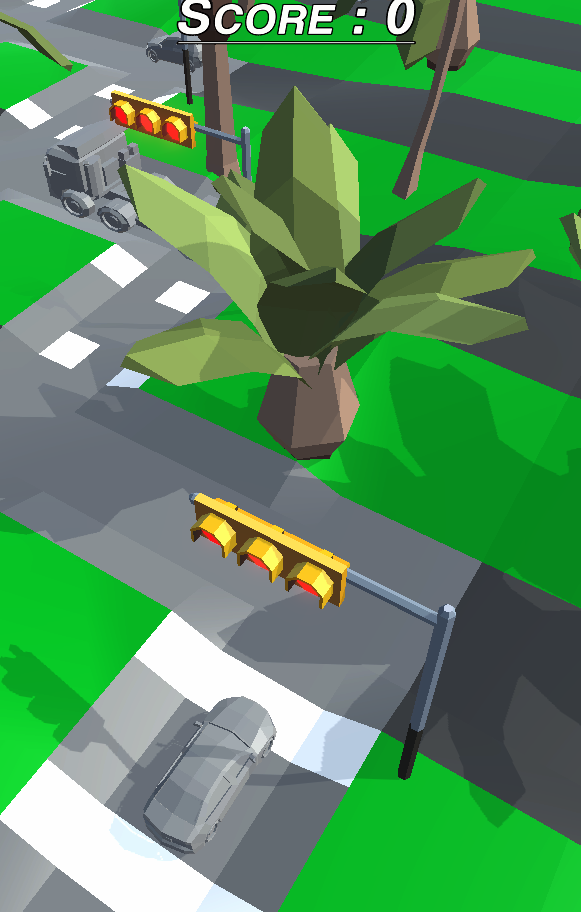

L’Arbre Blanc: Le Jeu is the first-term project at ETPA. It is a serious game created by Corentin HABIB and me. The brief was to take a building or a tourist site in Montpellier and turn it into a serious game for children aged 8 to 12 on mobile. We chose L’Arbre Blanc, a famous building in Montpellier known for its architecture. The goal of the game was to recreate L’Arbre Blanc while conveying the disorienting aspect of its architecture through a reinterpretation of the classic puzzle game. To achieve this, the building was fully modeled and then broken into several pieces to serve as puzzle pieces. The game runs on Android and was developed using Unity. Several constraints were imposed: a riggable element in the game (our building), providing information progressively as the player advances, and comprehensive documentation prepared beforehand.
Complete walkthough is ready to read
Traffic Car Traffic Road is a game created in one day, with the goal of using Unity to make a hyper-casual game and demonstrate how quickly such games can be developed if this style is chosen as a specialty. The game is inspired by popular titles on the Play Store and App Store. It features a single control: touch. The player uses it to move their car along a path pre-designed by the level designers. The player must time their movements carefully to avoid accidents.
Game available here | Using WebGL library the game is ready to play directly on browser.
Runic Golem is my third participation in the Global Game Jam, whose theme that year was “Duality.” We aimed to create a puzzle-strategy game inspired in part by chess. The player takes on the role of a young magician navigating floating islands around a giant vortex. The vortex summons elemental golems that the mage must defeat.
To do this, the player moves from island to island to collect runes and cast powerful spells. The goal is to plan turns in advance to efficiently combat waves of enemies. During this Game Jam, our team of six created everything from scratch, including music and 3D models. The game was developed in Unreal Engine 5 to take advantage of new technologies such as Lumen and Nanite.
Game is playable here
Opera Tosca is a professional project commissioned by the Opéra de Montpellier. The goal was to highlight video game creation in connection with opera. We worked on Tosca by Giacomo Puccini. For us, the heart of the game was to emphasize the music and the soprano’s struggle against her antagonist, the Baron. To meet this challenge, we created a rhythm game that replays the entire second act of the opera, requiring players to use their controller skills to follow the singing curve of their avatar.
The game was praised by both the supervising team and the client, the Opéra National de Montpellier.
Armistice is a game created during ETPA’s annual inter-campus Game Jam. That year’s theme was “War and Peace.” My team and I decided to have the player take on the role of a French soldier, a peace envoy on the eve of the Armistice. The goal is to deliver the ceasefire orders to command before the end of the day, knowing that the Armistice will be signed the following day. The player must dodge mines, bombs, and machine-gun fire while taking cover in shell craters and trenches. The game was developed entirely by our team using Unreal Engine. For this project, we implemented polish mechanics such as the hero’s head being drawn toward points of interest along the path, as well as footprints and mud in the trenches. Animations were created using Plask, an AI tool compatible with Mixamo rigs.
Game is available on this link
Two is a horror game created as part of the second-semester project in the second year at ETPA. It is a complete game lasting about thirty minutes, developed in Unreal Engine 5. The player takes on the role of a space engineer tasked with repairing a laboratory station. Upon arrival, the eerie atmosphere and the lack of personnel begin to unsettle them.
The player alternates between zones with and without gravity and must connect cables to restore electricity in the station. The game was developed over three months by a team of five. I personally handled the gameplay programming as well as the project producing. GDD can be read. The game’s monster was created, sculpted, rigged, and animated entirely by our team. We used motion capture for most of its animations.
Game is playable here on itch.io
As part of GMTK 2022, whose theme was “Roll of Dice,” my friend and I created Dice of God. It is a game developed in Unreal Engine 5 where the player takes on the role of a god who must protect their village from hordes of enemies.
The player uses a slingshot to launch dice across the map to hit enemies. If enemies are not defeated in one hit, the player can rely on the magic invoked by the dice faces to cast powerful spells. The player can also visit the blacksmith throughout the game to modify their dice.
Can be play on itch.io